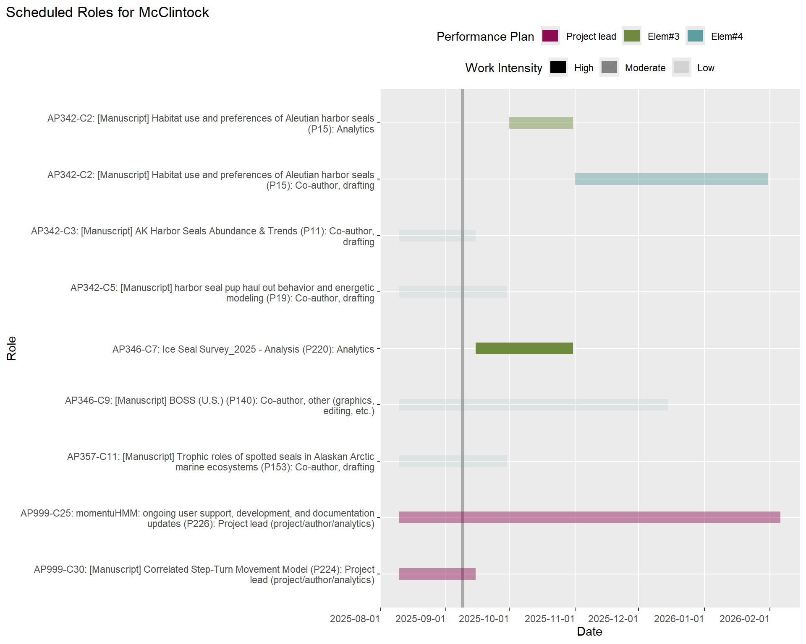
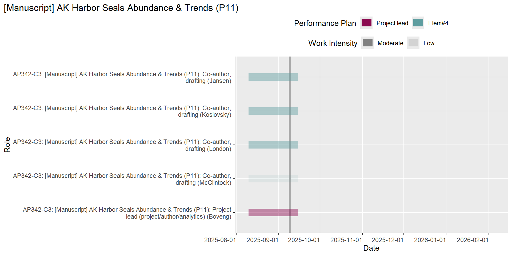
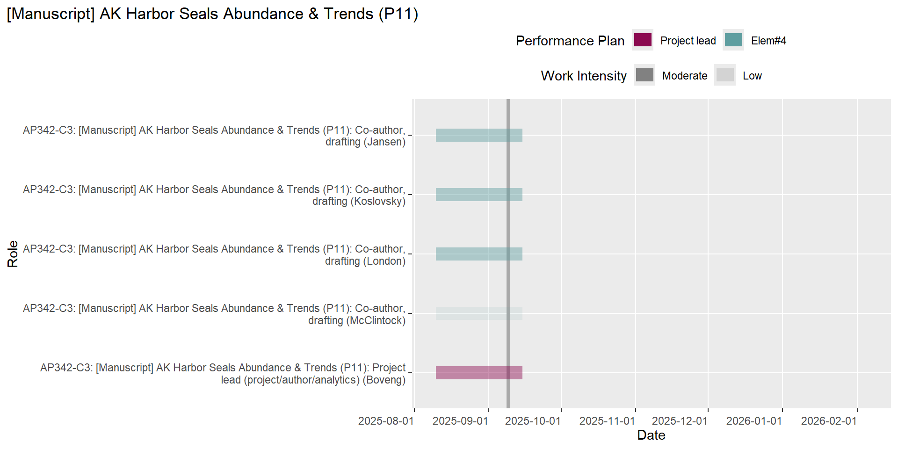
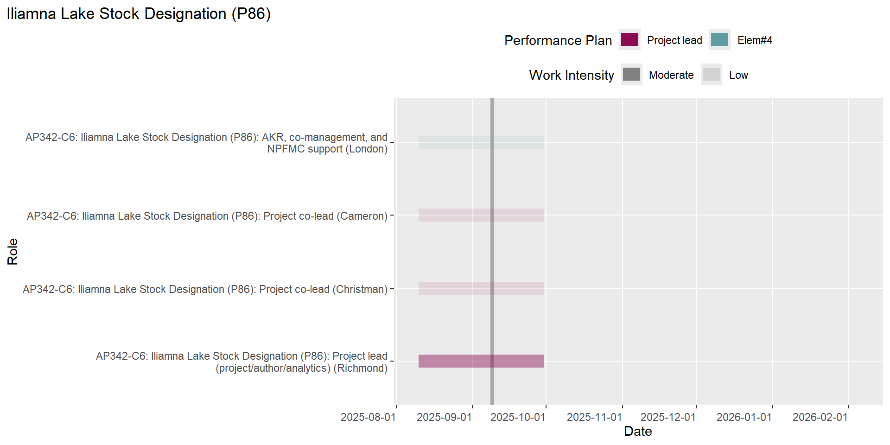
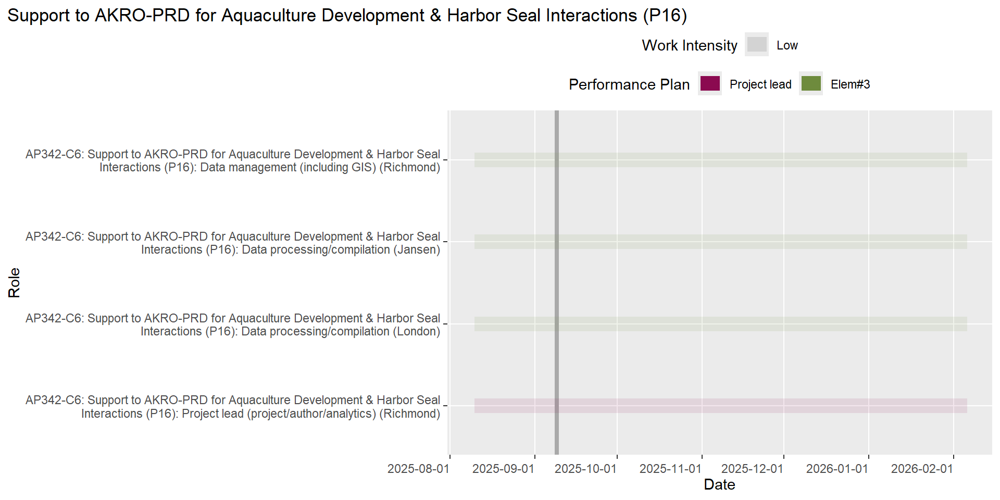
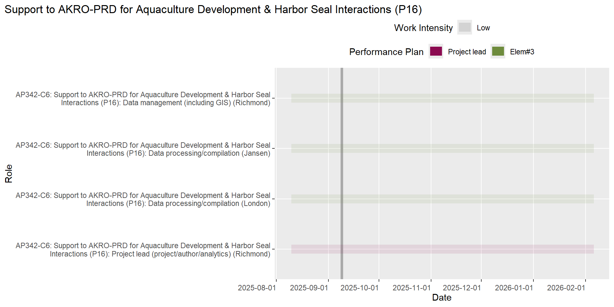
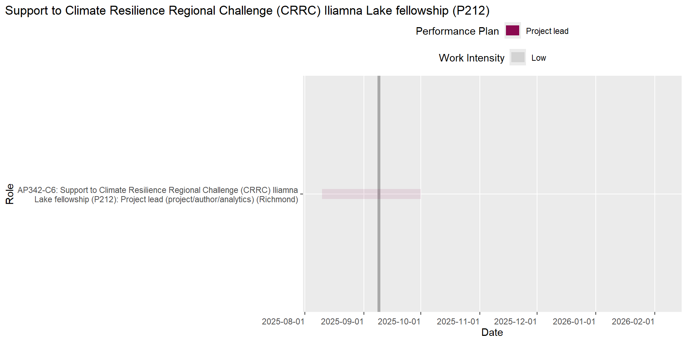
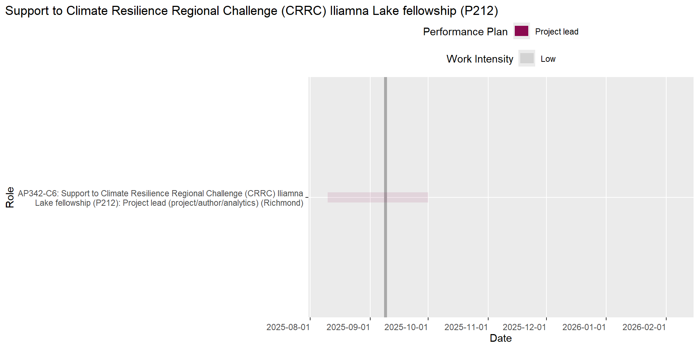
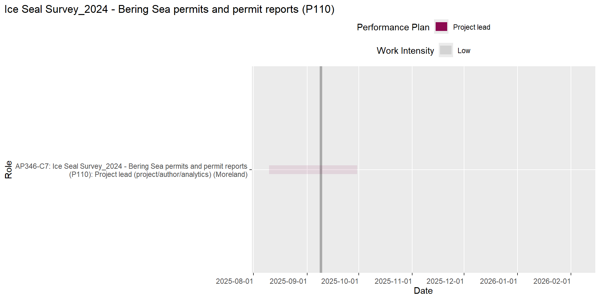
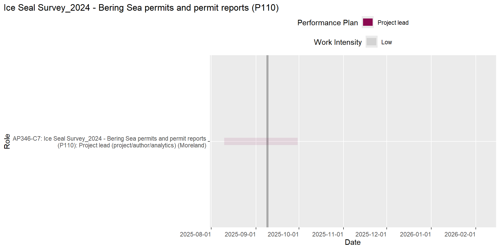

PEP Scheduling Report
This report was generated on 2024-10-15.
Introduction
The information in this report represents the outstanding and upcoming work for PEP staff over the next 180 days. The intent of this information is to help support cross-project planning and communication.
Roles Missing Info
The following table lists the the number of roles for each staff that are missing required information in the DB.
Click to Expand
| Staff | # Missing Info |
|---|---|
| Boveng | 22 |
| Brady | 9 |
| Cameron | 10 |
| Christman | 9 |
| Dahle | 9 |
| Jansen | 22 |
| Koslovsky | 7 |
| Lindsay | 2 |
| London | 27 |
| McClintock | 20 |
| Moreland | 16 |
| Richmond | 24 |
| VerHoef | 9 |
| Walcott | 7 |
| Ziel | 22 |
Work Due Soon
The following table lists the roles that are expected to end within the next 10 days in the DB.
| Project | Role | Staff | Planned End Date |
|---|---|---|---|
| AP356-C14: UAS Body Condition: Data Analysis and Reporting (P62) | Data management (including GIS) (R397) | Koslovsky | 2024-10-18 |
| AP342-C3: [Manuscript] AK Harbor Seals Abundance & Trends (P11) | Co-author, drafting (R74) | London | 2024-10-16 |
| AP342-C3: [Manuscript] AK Harbor Seals Abundance & Trends (P11) | Co-author, drafting (R766) | McClintock | 2024-10-16 |
| AP342-C3: [Manuscript] AK Harbor Seals Abundance & Trends (P11) | Co-author, drafting (R436) | VerHoef | 2024-10-16 |
Overdue Work
The following table lists the roles that are overdue in the DB.
Hooray!! No overdue work!
Potential Bottlenecks
The following figures display the number of roles by work intensity by staff for this week, in the next 30 days and in the next 90 days.


Planned Work by PEP Staff
Today’s date is shown as a grey vertical line on the figure. Roles that are missing “work intensity” appear on the y-axis of each chart, but the start/end dates are not visible.





Planned Work by Project
Today’s date is shown as a grey vertical line on the figure. Roles that are missing “work intensity” appear on the y-axis of each chart, but the start/end dates are not visible.
Click to Expand
Diet and physiology (AP350)
Analyses of samples collected in the field (C10)


Harbor seals (AP342)
Abundance and trend analysis of harbor seal stocks (C3)

Aerial surveys of harbor seals in Alaska (C1)


Harbor seal reporting (C17)

Ice seals (AP346)
Aerial surveys of ice seals and polar bears (C7)
 

Scientific support for management of ice seals (C9)


Vessel-based research of ice seals (C8)


Other (AP999)
Open science/software (C25)

Procurement and shipping (C16)


Program data/information management (C15)
  

Statistical model development (C30)
 

UAS project support (C32)


Working group memberships (C28)

 

Toolbox (AP354)
Integrating diverse data sources (C12)


Trophic roles (AP357)
Analysis for Trophic Roles of Ice Seals - RWP Proj (C11)

Integrating seal energy req. and diet composition (C21)

UAS body condition (AP356)
Phase III: UAS field tests, analysis and reporting (C14)


Manuscripts
The following tables list the actions associated with each planned manuscript.
Click to Expand
AK Harbor Seals Abundance & Trends (P11)
| Role | Staff | Planned End Date | Status |
|---|---|---|---|
| Co-author, drafting (A436) | VerHoef | 2024-10-16 | In progress |
| Co-author, drafting (A74) | London | 2024-10-16 | In progress |
| Co-author, drafting (A766) | McClintock | 2024-10-16 | In progress |
| Co-author, drafting (A530) | Jansen | 2024-12-16 | In progress |
| Lead author (A76) | Boveng | 2025-02-28 | In progress |
| Project lead (A631) | Boveng | 2025-02-28 | In progress |
Bearded seal “at sea” distributions (P37)
| Role | Staff | Planned End Date | Status |
|---|---|---|---|
| Analytics lead (A232) | Conn | 2025-01-01 | In progress |
| Lead author (A351) | Conn | 2025-01-01 | In progress |
| Project lead (A634) | Conn | 2025-01-01 | In progress |
BOSS (Russia) (P141)
| Role | Staff | Planned End Date | Status |
|---|---|---|---|
| Project lead (A698) | Conn | 2025-09-30 | In progress |
CKMR (P144)
| Role | Staff | Planned End Date | Status |
|---|---|---|---|
| Project lead (A703) | Conn | 2025-09-30 | In progress |
Hematology and dive characteristics of ribbon and spotted seals (P92)
| Role | Staff | Planned End Date | Status |
|---|---|---|---|
| Analytics lead (A524) | Conn | 2025-09-30 | Not yet started |
Joint Beaufort Sea Survey_2021 - Disturbance study (P26)
| Role | Staff | Planned End Date | Status |
|---|---|---|---|
| Data processing/compilation (A161) | Walcott | 2024-11-01 | In progress |
| Project lead (A652) | Walcott | 2025-01-31 | In progress |
Simulation-based inference for CKMR (P172)
| Role | Staff | Planned End Date | Status |
|---|---|---|---|
| Lead author (A791) | Conn | 2025-07-01 | In progress |
Steller sea lion “at sea” distributions (P36)
| Role | Staff | Planned End Date | Status |
|---|---|---|---|
| Analytics lead (A221) | Conn | 2025-09-30 | Not yet started |
| Project lead (A649) | Conn | 2025-09-30 | Not yet started |
Trophic roles of spotted seals in Alaskan Arctic marine ecosystems (P153)
| Role | Staff | Planned End Date | Status |
|---|---|---|---|
| Co-author, drafting (A605) | Conn | 2025-03-01 | In progress |
| Co-author, drafting (A607) | Koslovsky | 2025-05-30 | In progress |
Reports
The following tables list the actions associated with each planned report.
Click to Expand
Complete an ESA 5-year status review for bearded seals (P63)
| Role | Staff | Planned End Date | Status |
|---|---|---|---|
| Co-author, drafting (A413) | Ziel | 2024-11-07 | In progress |
Field report for the 2024 Norseman II cruise (P180)
| Role | Staff | Planned End Date | Status |
|---|---|---|---|
| Lead author (A808) | Ziel | 2024-12-31 | In progress |
| Project lead (A807) | Ziel | 2024-12-31 | In progress |
Performance Plan Elements (FY25)
The following tables list the roles for all PEP staff by performance plan element.